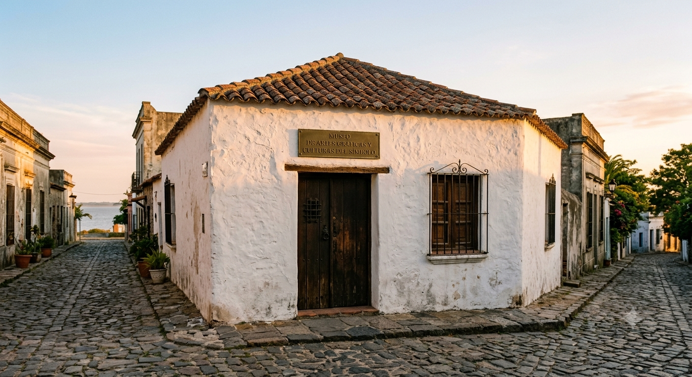
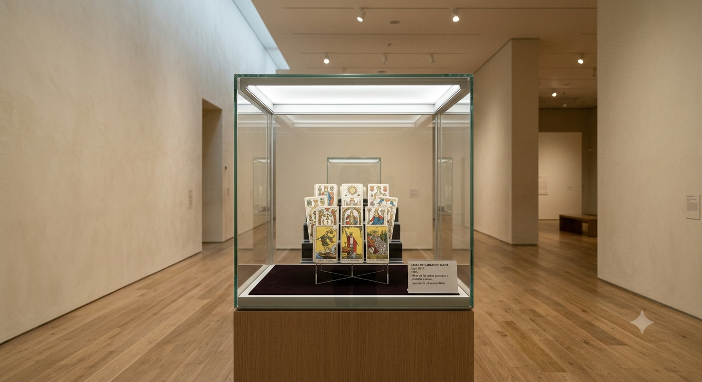
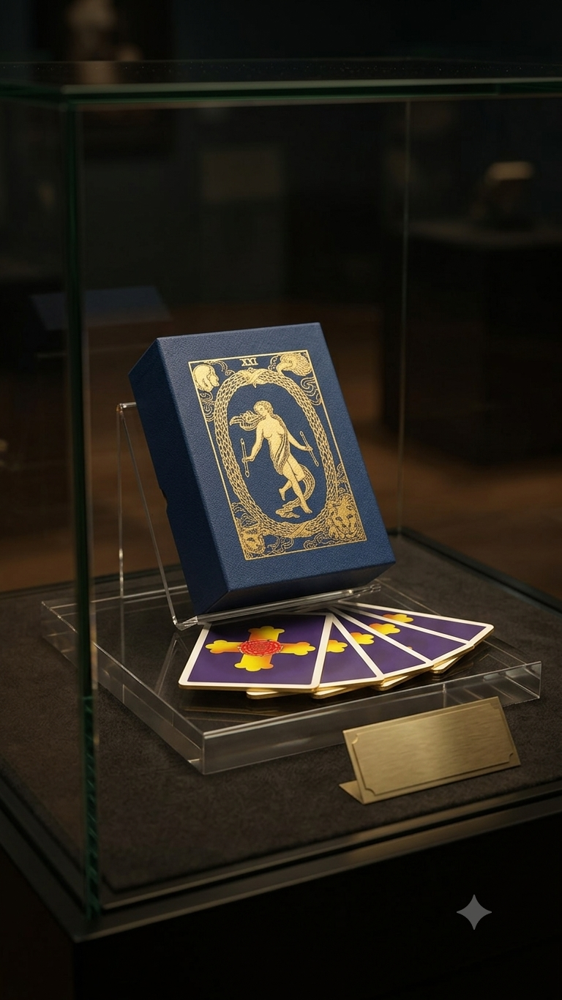
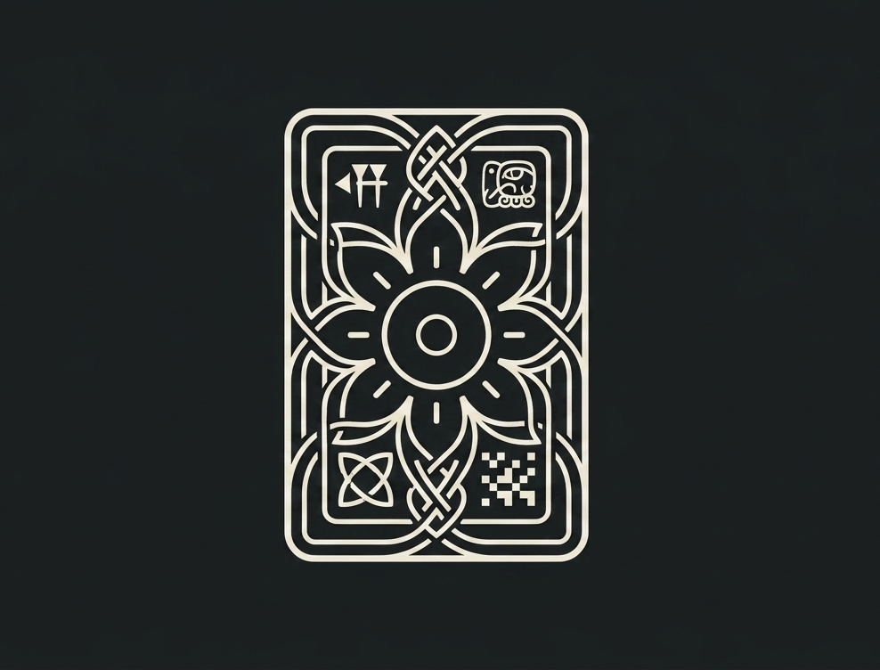

Museo de Artes Gráficas y Culturas del Símbolo
Donde las imágenes tienen historia
Conocé la muestra actualSobre el museo
Somos un espacio dedicado a la cultura visual y los sistemas de representación simbólica a través del tiempo. Estudiamos los objetos no solo por lo que son, sino por lo que dicen: sobre quién los hizo, para quién, y qué imaginarios pusieron en circulación.
📍 Av. del Patrimonio 142, Colonia del Sacramento, Uruguay
✉ contacto@museoartegrafico.uy


Muestra actual
Imágenes que ordenan el mundo
Sistemas simbólicos y cultura visual en Occidente
Una muestra dedicada a los lenguajes visuales que, a lo largo de la historia, organizaron creencias, conocimientos e imaginarios colectivos. Desde sistemas de escritura antiguos hasta mazos de cartas ilustrados, esta exhibición invita a pensar las imágenes no solo como arte, sino como herramientas con las que distintas culturas dieron sentido al mundo.
Museo de Artes Gráficas y Culturas del Símbolo
Tarot de A. E. Waite
Edición en español · Arkano Books, © 1997
En 1909, el ocultista Arthur Edward Waite le encargó a una artista llamada Pamela Colman Smith que ilustrara cada una de las 78 cartas de un nuevo mazo de tarot. Ella lo hizo. Waite se llevó el crédito. Durante décadas, el mazo se conoció solo por su nombre.
Hoy ese mazo es el más reproducido y reconocido del mundo. Sus imágenes —el loco al borde del precipicio, la sacerdotisa entre columnas, el mundo danzando dentro de una corona de laurel— se convirtieron en un lenguaje visual compartido que atraviesa el arte, el diseño y la cultura popular. Cada carta combina simbolismo hermético, referencias numerológicas y una narrativa visual que invita a la interpretación.
El ejemplar que se exhibe aquí es una edición en español publicada por Arkano Books, valorada por reproducir con gran fidelidad los colores originales de 1909. Incluye las 78 cartas impresas en cartón plastificado y un manual redactado por el propio Waite. Llegó desde España hasta manos uruguayas, y de una colección particular a esta sala: un recorrido que habla tanto como las imágenes que lleva dentro.
Autor del diseño
A. E. Waite / P. C. Smith, 1909
Técnica
Impresión offset · cartón plastificado
Procedencia
Colección particular · donación
Nº inventario
MAGS-2026-001
Documentación del objeto

Identidad visual
El isotipo
El isotipo transforma la estructura clásica de una carta en una roseta central, símbolo de guía y expansión cultural. En sus esquinas aparecen cuatro glifos que recorren la historia de la escritura: cuneiforme, jeroglífico maya, nudo celta y matriz de píxeles, desde las primeras formas de expresión escrita hasta el lenguaje digital.
Diseño generado con inteligencia artificial (Gemini) como parte de este proyecto académico.
Comunidad digital
Seguinos en Instagram
Descubrí piezas de la colección, curiosidades sobre cultura visual, procesos de investigación y contenido exclusivo del museo.
📷 Visitar Instagram@museoartegrafico.uy
Visitanos
📍 Av. del Patrimonio 142, Colonia del Sacramento, Uruguay
🕐 Martes a domingo, 10:00 a 18:00 hs
✉ contacto@museoartegrafico.uy
📷 @museoartegrafico.uy